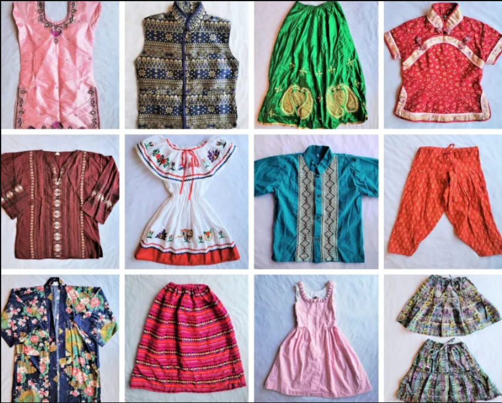

Explain how clothing can signal social status and group affiliations.
Brand SignalingIndividuals often wear clothing with prominent logos or brand names to indicate affluence and social status. This practice reflects the desire to showcase designer labels and how it can affect others' perceptions. It reflects the idea of how Capitalism feeds the idea of what Marxists call "sign-exchange value". |
Luxury vs. Affordable FashionComparing and contrasting how luxury fashion and more affordable fashion choices can communicate different aspects of social status. People may use luxury items to signal wealth and exclusivity, while others prioritize affordability and practicality. |

Cultural AffiliationsClothing serves as a way to identify with certain cultural or subcultural groups. Examples of how clothing can reflect one's affiliation with specific subcultures and how these styles can convey social identity. |